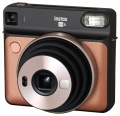

器材库 > 胶片袖珍相机（PS） > instax SQUARE SQ6

规格总览
发布日期
2018-05-15
产品类型
一次成像照相机
使用胶卷/胶片
富士一次成像胶片“instax SQUARE”
画幅
62×62mm
镜头及对焦
镜头
f=65.75mm 1:12.6
镜头结构
2片/2组
对焦范围
0.3m~0.5m / 0.5m~2m / 2m~∞
曝光控制
快门速度
1.6秒 - 1/400秒
自拍
10秒
其它规格
电池
锂电池（CR2）2枚
颜色
白色, 金色, 灰色
尺寸
118.7×128.1×58.1mm
重量
393g
该产品暂无存档的网友点评
产品图 / 样片
instax SQUARE SQ6